Nook
Your browser remembers.
Same curious mind.
Fewer forgotten things.
10:24
Good morning
🍃
A calmer browser for a brighter day.
You've got 12 tabs that haven't been visited in a while.
›
Progress
lives here too.

z z
A Guide to Better Thinking

This bookmark is getting lonely.
You haven't opened it in 61 days.